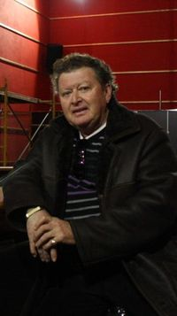
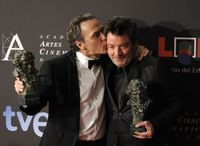
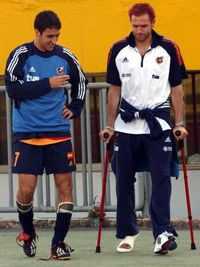
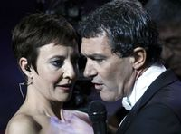
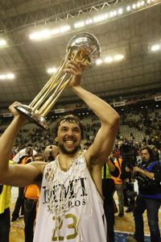

Mon, 20 Feb 2012 01:17:00 +0100
Varios países envían una carta a Bruselas con recetas para volver a crecer
Los Gobiernos "de siete u ocho países", de la zona euro han enviado una carta a los presidentes del Consejo Europeo, Herman van Rompuy, y de la Comisión Europea, José Manuel Durao Barroso, con "indicaciones concretas" para impulsar el crecimiento en Europa, donde cinco países del euro han cerrado 2011 en recesión, según ha anunciado hoy el presidente del Gobierno italiano, Mario Monti. Horas después, se ha conocido que entre los dirigentes que firman la misiva también está el presidente español, Mariano Rajoy.

El BCE facilita el acuerdo de los acreedores privados con Atenas
El Banco Central Europeo (BCE) ha concluido el canje de los títulos de deuda griega que empezó a adquirir en 2010, en una operación que aliviará los compromisos futuros de pago del Tesoro griego, sin que ello implique un quebranto para el emisor europeo. Según recoge The Wall Street Journal citando a un funcionario europeo, la participación del BCE abre el camino para que hoy se cierre un acuerdo con los acreedores privados que permita aliviar el peso de la deuda griega.

Toxo afirma que la reforma laboral ya se traduce en rebajas de sueldos
El secretario general de CC OO, Ignacio Fernández Toxo, ha afirmado este lunes que, aunque ha pasado poco tiempo desde su entrada en vigor, los primeros efectos de la reforma laboral del Gobierno han empezado a ser "visibles" en algunas empresas de servicios, especialmente en la hostelería, que han procedido a rebajar los sueldos de los trabajadores.
La policía detiene a tres jóvenes en otra protesta en Valencia
Siete estudiantes y tres menores han sido detenidos por la Policía en la nueva protesta estudiantil convocada en Valencia. La concentración convocada ante el Instituto Lluís Vives el centro de la ciudad a través de las redes sociales se ha convertido en una nueva manifestación de protesta por las calles próximas. Los jóvenes congregados ante el instituto, cerca de medio millar, se han saltado el cordón policial, han cortado la calle de Xàtiva (junto a la Estació del Nord) y se han dirigido a la cercana plaza de San Agustín.
"El PP tiene que salir a la calle para explicar lo que hace"
Tenemos es una de las palabras que más repetía ayer el nuevo vicesecretario general de Organización y Electoral del PP, Carlos Floriano, que se estrenó en el cargo en la primera reunión del Comité Ejecutivo Nacional del partido. Tenemos que hacer, tenemos que conseguir, tenemos que comunicar. El hombre de moda del aparato de Génova, como se escuchaba en la última jornada del congreso de Sevilla, el dirigente que apenas figuraba en las quinielas previas sobre la composición de la cúpula no tardó en lanzar un piropo a sus jefes, Mariano Rajoy y Dolores de Cospedal. Saben medir los tiempos, dijo en referencia a que no se enteró hasta el final, en la tribuna, de que el presidente le había elegido para ese puesto.
Los terroristas, excluidos de la ley vasca sobre abusos policiales
El Gobierno ha presentado hoy el borrador de decreto que reconocerá como víctimas a quienes padecieron abusos policiales entre 1968 y 1978 y que excluye a los terroristas. La consejera de Justicia, Idoia Mendia; la directora de Derechos Humanos, Inés Ibáñez de Maeztu, y la exmagistrada Manuela Carmena, quien está coordinando esta cuestión, han presentado esta mañana en Vitoria el borrador del decreto, que podría estar aprobado definitivamente la próxima primavera, y al que seguirá otro que incluirá a las víctimas a partir de 1978.
El fiscal pide 12 años para el dueño del macroburdel de La Jonquera
José Moreno, empresario de locales de alterne, se sentará hoy en el banquillo acusado de dirigir una trama encargada de trasladar mujeres procedentes de Brasil para prostituirlas en sus burdeles para ganar dinero. Moreno abrió uno de los burdeles más grandes de Europa en La Jonquera (Alt Empordà) en octubre de 2010, semanas después de ser detenido por agentes del Cuerpo Nacional de Policía y cuando estaba imputado en dos causas por tráfico de personas. Junto con el empresario se sentarán otros seis acusados que, según el fiscal, trabajaban a sus órdenes en 2008, año en que las testigos protegidas declararon que habían llegado a España gracias al dinero de la trama para prostituirse. El fiscal pide para todos ellos 12 años de cárcel por un delito continuado contra el derecho de los trabajadores extranjeros y relativo a la prostitución. El abogado de Moreno niega todos los cargos.

El "corredor de la muerte" de Girona se cobra cinco fallecidos
El alcalde de Figueres, Santi Vila, ha urgido al Ministerio de Fomento que mejore la circunvalación de la N-II a su paso por el municipio, donde han muerto cinco personas este domingo en un choque frontal, y que él ha calificado de "auténtico corredor de la muerte". En el accidente entre una furgoneta y un camión en Figueres (Alt Empordà) también han resultado heridas cuatro personas, dos de ellas de gravedad. Vila ha recordado que este tramo es uno de los puntos de la red viaria de Girona con más accidentes.
La masacre en una cárcel mexicana buscaba tapar una fuga de Zetas
El del penal de Apodaca fue un infierno con hoja de ruta. Nada de accidente, de caos surgido espontáneamente. A poco más de 24 horas de la matanza de 44 reos en esa cárcel a las afueras de Monterrey (norte del país), se sabe que los muertos pertenecían al cartel del Golfo, que la carnicería sirvió para cubrir la fuga de 30 reos pertenecientes al grupo criminal Los Zetas, y que nada de esto pudo ocurrir sin la complicidad de un grupo de traidores, como ha llamado el gobernador de Nuevo León Rodrigo Medina a custodios no identificados aún que ayudaron a asesinos y prófugos.
Corea del Sur realiza maniobras pese a la amenaza del Norte
Corea del Sur no se ha amilanado ante las amenazas del Norte y ha llevado a cabo ejercicios de tiro real desde cinco islas situadas cerca de la frontera marítima en disputa entre los dos países en el mar Amarillo. El Ministerio de Defensa en Seúl ha asegurado que el Cuerpo de Marines, que guarda las islas, comenzó las pruebas a las 10.00 hora local (ocho horas más en la España peninsular) y las finalizó antes del mediodía. Pyongyang no ha respondido, a pesar de que había amenazado con "ataques de represalia sin piedad" si algún proyectil caía en aguas que considera suyas. Seúl notificó el domingo al Norte que iba a llevar a cabo los ejercicios.
Bojovic: "Somos soldados"
Nosotros somos soldados, le espetó a uno de los agentes de la Policía Nacional encargados de su detención el pasado 9 de febrero. Cuando el policía le preguntó si era Luka Bojovic, jefe del clan que acabó con la vida del ex primer ministro serbio Zoran Djindjic en 2003, respondió: Tú sabrás. No te voy a contestar. Se negó a declarar. Solo quiso dejar claro que se consideraba un soldado, no un mafioso, y quiso saber cómo, a pesar de sus estrictas medidas de seguridad, los policías habían llegado hasta él. No lo entendía. Hablaba un español más que correcto. Porque ha pasado en España los últimos 10 años. La mayor parte de ellos, sin esconderse.
Dos destructores de EE UU llegarán a Rota en 2014
Los dos primeros destructores antimisiles de la clase Arleigh Burke que España albergará en la base de Rota (Cádiz) como parte del componente naval del escudo antimisiles llegarán entre octubre de 2013 y septiembre de 2014, según ha anunciado el secretario de la Navy, Ray Mabus. Los otros dos lo harán entre octubre de 2014 y septiembre de 2015. También ha revelado la identidad de los buques: los dos primeros serán el USS Ross y el USS Donald Cook y los segundos, el USS Porter y el USS Carney.
Urbizu y Coronado dan el golpe en los premios
La ceremonia fue una competición igualada entre las cuatro favoritas, más Eva. Solo al final No habrá paz para los malvados dio el pelotazo, cuando obtuvo los últimos trofeos de la noche: actor protagonista (José Coronado), dirección y película. Antes el thriller de Urbizu había ganado sonido, montaje y guion original. Desde el inicio de la gala, había algo policial en el ambiente. Y no solo por los premios, sino por grandes medidas de seguridad con perros policías por el interior del palacio, y fuertes efectivos en el exterior. No pudieron parar a un miembro de Anonymous que se quedó al pie del escenario ni a un muletilla extremeño que pidió financiación desde el estrado para un western en su tierra.

Tomarse la alfombra roja en serio o no
Decía Valentino, acaso uno de los diseñadores que más sabe de la materia, que hoy el problema con las actrices es que cuentan con un exceso de opiniones. La alfombra roja es muy divertida, pero esas mujeres últimamente escuchan a demasiada gente. Además del diseñador, contratan a su propio consejero, y luego, cuando ya están listas, si aparece un camarero en la habitación y les dice '¡Uh! Estás mejor con el otro vestido', corren a cambiarse. Después de 45 años, sé ver si alguien está sensacional o sólo regular.
Cervera cederá un año más su colección
El museo Thyssen recibe con buenas noticias al ministro de Educación, Cultura y Deportes, José Ignacio Wert. La baronesa ha anunciado esta mañana, en presencia de Wert y al término del primer patronato al que este asiste en la pinacoteca, la prórroga por un año de la cesión de su colección, 240 obras en total, al Estado. Tras esa decisión estaría la certeza por parte de Carmen Cervera de que, dadas las circunstancias, no son momentos para negociar nuevos términos de alquiler. La colección estaría valorada en 700 millones de euros, en estimaciones de Sotheby's, según explicó la baronesa a este diario.
El partido perfecto
El favorito era el Barcelona, dominador con brazo de hierro de los últimos tiempos baloncestísticos, pero el que se comportó como un campeón fue el Madrid. En el mejor escaparate posible, el día en que los focos apuntan hacia este deporte más que ningún otro día de la temporada, los de Laso hicieron el partido soñado. Del minuto uno al 40 dominaron de cabo a rabo el encuentro, los tiempos, el ánimo y, por supuesto, el marcador.
Mon, 20 Feb 2012 02:43:00 +0100
"Debemos ser más fuertes que las condiciones"
Dicen los rusos que el invierno ha sido benévolo con el Madrid. Como si el equipo más fino del planeta necesitase de buenas condiciones atmosféricas, la ola de frío que azotaba el país ha dado paso a temperaturas más moderadas, digamos, de no más de 10 grados bajo cero. Justo cuando el Madrid se dispone a jugar contra el CSKA en el estadio Luzhniki, mañana en la ida de los octavos de la Liga de Campeones (18.00, TVE), el rigor del invierno ruso se suaviza.
Valencia: El club de las extrañas lesiones
El percance de Banega, atropellado por su propio coche, evoca otros episodios accidentales en el mundo del deporte. Todavía hoy se debate sobre qué había ocurrido cuando el 7 de noviembre de 1995 Carles Busquets, padre del hoy centrocampista blaugrana y entonces meta titular del equipo, se presentó en el entrenamiento con las manos inutilizadas. Me las quemé con una plancha, adujo. Johan Cruyff, entonces técnico del Barcelona, dejó una de esas sentencias inolvidables. No me puedo imaginar a Busi planchando. A lo que el jugador replicó: Tampoco yo veo a Cruyff con una plancha en la mano, aunque, eso sí, yo no tengo chacha. Luego ofreció detalles del episodio por el que acabó de baja durante unas semanas. Su mujer estaba planchando y su hijo Aitor y él jugaban en el suelo. De pronto el pequeño tocó la tabla, esta se desequilibró y cayó al vacío. Se supone que Busquets detuvo la plancha en felina intervención antes de que esta impactara en el chico. Se perdió un partido de Liga y regresó al siguiente recuperado de quemaduras de segundo grado. Por el camino desmintió que las ocasionara un accidente de motocicleta.

Récords para Lin, Ricky, Ibaka y Durant
Ni Dallas, el campeón de la NBA, el equipo que se estaba recuperando con seis victorias consecutivas, ni Nowitkzki, que anotó 34 puntos, pudieron con Jeremy Lin. La sensación de los Knicks volvió a maravillar en el Madison Square Garden, donde cada vez se dan cita más famosos (esta vez acudieron Eva Longoria, Kevin Costner, Mark Zuckerberg, Willie Randolph y Seth Meyers, entre otros). Con Lin en la cancha puede pasar cualquier cosa y la mayor parte de ellas son positivas para los Knicks, que ganaron por 104-97.
Así suena lo nuevo de 'El Jefe'
Ya lo dice el estribillo de la nueva canción: Cuidamos de los nuestros, allá donde ondee la bandera. Difícil ser más gráfico. Bruce Springsteen quiere cuidar de los suyos, su inseparable E Street Band, al tiempo que quiere seguir conquistando grandes plazas con su potente rock en directo. Por eso, el cantante de Nueva Jersey ha decidido seguir manteniendo a su banda de siempre, a pesar de las emblemáticas bajas por fallecimiento del saxofonista Clarence Clemons y el organista Danny Federici, y lanzarse de nuevo a una gira mundial por pabellones y estadios, incluyendo cinco paradas en España.
Historia de las dos 'Giocondas'
La reaparición que no aparición en sentido estricto- de la ya popularmente conocida como Gioconda del Prado añade un nuevo capítulo al inacabable libro imaginario sobre los misterios del retrato más famoso de la Historia del Arte. ¿Pintó Francesco Melzi los contornos de esta inquietante copia de la Mona Lisa? ¿Fue Andrea Salai, también discípulo de Leonardo pero, además de eso, amante suyo? ¿Por qué esta réplica -que contemplada de cerca sugiere de principio a fin todos y cada uno de los mundos y sensaciones encerradas en el rostro de su hermana mayor, el original que vive en el Louvre- pasó tantos años en las paredes del Prado sin que los sucesivos responsables y los expertos sucesivos le otorgaran más valor que el de una copia más, banal, triste, oscura y casi olvidable? Y sobre todo, ¿cómo lucirá esta tabla sobre nogal, ya totalmente restaurada, en el mismísimo Louvre cuando el próximo mes sea colgada a escasos metros de la inmortal obra que la inspiró?
Mon, 20 Feb 2012 04:52:00 +0100
Un Eurogrupo marcado por la desconfianza decide sobre Grecia
Como le gusta a Europa: con media docena de fechas límite incumplidas, en el último minuto, con los mercados al acecho y, lo que es más grave, sin auténticas garantías de acuerdo. El Eurogrupo decidirá hoy la suerte de Grecia en un ambiente enrarecido, marcado por la desconfianza y el escepticismo respecto al país que inició la crisis y que sigue siendo el mayor quebradero de cabeza de Europa. Anoche parecía que habría fumata blanca y que los socios europeos activarán un nuevo plan de rescate, de al menos 130.000 millones de euros. Pero Europa no se fía. Hasta ahora se ha limitado a dar crédito a cambio de promesas. Esta vez, lo que está por decidir es cómo se articulará la entrega del dinero: el Eurogrupo quiere mano dura para asegurarse de que la enésima oleada de recortes se aplica a rajatabla. A pesar de que esos recortes, hasta ahora, no han traído más que algo parecido a una depresión y un malestar creciente en las calles.
Hacienda aplaza la reforma del impuesto de Sociedades
El secretario de Estado de Hacienda, Miguel Ferre, ha asegurado esta mañana que el Gobierno aplazará la reforma del Impuesto de Sociedades hasta después de que termine la consolidación fiscal. Es decir, que Hacienda no tocará el tributo sobre los beneficios de las empresas hasta que España salga de la recesión y se empiece a superar la crisis, pese a que su recaudación ha caído mucho más que el retroceso de la actividad económica. "Algo está pasando con el impuesto de sociedades", ha admitido Ferre durante la presentación de las jornadas Novedades fiscales para 2012, organizado por la Asociación para el Progreso de la Dirección.
Mon, 20 Feb 2012 10:08:00 +0100
La mayoría de la oposición rechaza la reforma laboral
El eco de las críticas a la reforma laboral que ayer sacó a la calle a cientos de miles de personas sigue escuchándose hoy. La oposición y los sindicatos han comenzado la semana arremetiendo con dureza contra el proyecto de ley del Gobierno que incluye, entre otras medidas, un abaratamiento del despido. El secretario general del PSOE, Alfredo Pérez Rubalcaba, ha contestado esta mañana a Mariano Rajoy que la reforma es "injusta, innecesaria e ineficaz", todo lo contrario a lo que el presidente del Ejecutivo defendió ayer en el discurso que ofreció en el congreso que los populares celebraron en Sevilla. En el mismo sentido, el secretario general del sindicato CC OO, Ignacio Fernández Toxo, ha pedido al Gobierno una "reacción" ante la protesta "que evite una escalada de tensión".
El nuevo estatuto del PP abre expediente a dirigentes imputados
Los estatutos aprobados por el PP en Sevilla han modificado el régimen sancionador de la formación para los casos de corrupción. Los populares se comprometieron a abrir expediente informativo a todos aquellos cargos que estén imputados por delitos dolosos (los tipificados como tráfico de influencias o cohecho lo son). Y el informativo se convertirá en disciplinario cuando se decrete la apertura de juicio oral. Aún así, la propuesta era que el expediente fuera directamente disciplinario, aunque ni siquiera suponía la suspensión cautelar de la militancia, pero las enmiendas aceptadas a esta ponencia suavizaron la medida. La suspensión de la militancia o de funciones será, de cualquier forma, analizada caso por caso, con lo que la fórmula no supone que, incluso iniciado el juicio, los cargos vayan a dimitir. Pese a todo, el PP ha adelantado algo en su lucha contra la corrupción, si lo pone en práctica.
Dos muertos por una infección en un centro de discapacitados
Dos personas han fallecido y al menos 13 han necesitado atención hospitalaria por una intoxicación, cuyo origen se investiga con la hipótesis de que es una infección bacteriana, en un centro de discapacitados psíquicos de Las Palmas de Gran Canaria, ha confirmado la Dirección General de Salud Pública de Canarias.
Mon, 20 Feb 2012 01:38:00 +0100
Condenado a 30 años el capo de la prostitución Cabeza de Cerdo
La Sección Tercera de la Audiencia Provincial de Madrid ha condenado a Ioan Clamparu, alias Cabeza de Cerdo, a 30 años de prisión, la máxima que solicitaba el ministerio público, al considerar al presunto capo de la prostitución rumana en Europa culpable de cuatro delitos de determinación a la prostitución, por obligar a una menor a prostituirse, y por ser el autor de un delito de aborto.
El juez imputa a otro excargo de Camps en el 'caso Urdangarin'
El juez que instruye el llamado caso Noós ha imputado a un cuarto cargo del gobierno de Francisco Camps por los pagos efectuados a la entidad que presidía Iñaki Urdangarin. Se trata de que ex subsecretaria de Presidencia, Isabel Villalonga, que autorizó parte del pago del contrato para la celebración de unos Juegos Europeos, por más de tres millones de euros que nunca se celebraron.

El CGPJ formaliza la expulsión de Garzón de la carrera judicial
La comisión permanente del Consejo General del Poder Judicial (CGPJ) ha acordado hoy la expulsión formal de Baltasar Garzón de la carrera judicial en cumplimiento de la sentencia del Tribunal Supremo que condena al juez de la Audiencia Nacional a 11 años de inhabilitación por autorizar la intervención de las conversaciones que mantuvieron en prisión los cabecillas del caso Gürtel con sus abogados.
Gauck, exdisidente de la RDA, será el nuevo presidente de Alemania
El teólogo protestante y activista de los derechos civiles de la Alemania del Este Joachim Gauck será presidente federal de Alemania. La Unión Demócrata Cristiana de la canciller Angela Merkel (CDU) ha aceptado al candidato defendido por sus socios liberales del FDP. Según se filtró durante la tarde del domingo de círculos cercanos al Gobierno, las negociaciones llegaron a momentos de fuerte tensión entre Merkel y los líderes del FDP. El independiente Gauck fue el candidato propuesto por la oposición de socialdemócratas (SPD) y Verdes en 2010, pero Merkel impuso entonces al también democristiano Christian Wulff (CDU), que tuvo serias dificultades para ganar la votación en la Asamblea Federal. Wulff dimitió el viernes, horas después de que la fiscalía pidiera la suspensión de su inmunidad para investigar un presunto delito de cohecho y trafico de influencias.
Limpieza étnica en la nueva Libia
La guerra acabó en Libia en octubre, pero Tauerga sigue siendo una ciudad fantasma. Casas saqueadas y quemadas. Calles destruidas. Cascotes, cristales, hierros retorcidos. Y silencio. No queda un alma en esta población del Occidente libio, sometida a la venganza inclemente de sus vecinos de Misrata. Los de Tauerga, dicen, ayudaron a las tropas de Muamar el Gadafi en sus tropelías. Por eso han arrasado la ciudad y por eso nunca permitirán el retorno de sus 35.000 habitantes, hoy desperdigados en campos de refugiados dentro de su propio país. En esta revancha sangrienta, el odio político se mezcla con un racismo soterrado. Además de gadafistas, los habitantes de Tauerga son negros.
TVE promueve el patrocinio para abaratar su programación
Asfixiada por el ajuste económico del Gobierno, la televisión pública busca fórmulas para abaratar el coste de sus parrillas. Las coproducciones de series de ficción y el patrocinio de programas considerados de servicio público han abierto una vía para intentar mitigar el recorte de 204 millones de euros que sufrirá la Corporación RTVE este año. La compañía estatal se ha lanzado a encargar programas que le salgan a coste cero. Las productoras tienen dos vías: o asumen el coste directamente (algo improbable) o buscan patrocinadores que se hagan cargo de la factura.
Los políticos de EE UU, colgados de la red
Hay políticos norteamericanos que explican en Facebook por qué han votado de una determinada manera en el Congreso. La embajada de Estados Unidos en Siria, cerrada por el conflicto, sigue "abierta" en la red. La campaña de reelección del presidente Barack Obama, pionera en el uso de las redes sociales en 2008, intenta ahora explotar con una lista en Spotify una de las cosas que cualquier votante que acuda a un mitin siempre recordará: las canciones con las que el candidato salta al escenario.
La gala de los Goya lidera en audiencia
La XXVI edición de los Premios Goya, emitida anoche por La 1 de TVE, registró una cuota media de pantalla del 23,3% y fue seguida por 4.156.000 espectadores. La gala fue líder de audiencia en el prime timedel domingo, pero sus datos son peores que el año pasado al registrar una pérdida de 184.000 seguidores.

Los Goya por los protagonistas en la Red
Muchos de los asistentes a la gala de los Goya son activos tuiteros. A continuación, recogemos algunos de sus comentarios durante la alfombra roja y a lo largo de la ceremonia.
Mon, 20 Feb 2012 11:04:00 +0100
Pablo Laso, el triunfo de un estilo
El vestuario madridista en el Palau Sant Jordi retumbaba al grito de ¡Que viva España! cuando Florentino Pérez cruzó el umbral de la puerta brazos en alto apretando los puños. El presidente aparcó su habitual mesura y se entregó a los zarandeos y achuchones de sus jugadores. La ocasión lo merecía. El baloncesto madridista acababa de derrotar al Barça en su casa rompiendo a lo grande con cuatro temporadas de sequía (desde que en 2007 Joan Plaza conquistara la Liga) y recuperando una Copa que no alzaban desde hacía 19 años. Todos celebraban la victoria, pero si alguien había ganado era Pablo Laso. El triunfador impensado.
Saltos de gigante
La Copa, el trofeo MVP, el que se otorga al mejor jugador de la competición, significa otro salto de gigante para el Madrid y Sergio Llull. Me he sentido muy bien en la cancha. Ha sido quizás el mejor partido que he jugado por la importancia que tenía. Lo importante era ganar una Copa que ansiábamos porque hemos vivido muchos momentos complicados, como la final four de la pasada temporada, las dos últimas finales Cuando me han aplaudido, he sentido una gran felicidad. Ha llegado la recompensa y es una sensación muy especial, dijo.

La Pulga celebra sus 200 partidos en la Liga
El 16 de octubre del 2004 se supo que estaba listo para poner en funcionamiento el carnet por puntos, en el Parc de la Ciutadella se celebró la V Fiesta de la Lactancia materna, España descubrió en la portada de El País que el argelino Lamari, el séptimo suicida de Leganés, había estado vigilado por el CNI y en Gaza seguían los bombardeos del ejercito israelí; además, ese sábado, el Real Madrid empató en Sevilla contra el Betis con un gol de Ronaldo, el brasileño, el Deportivo le ganó (2-1) al Getafe y Xabi Alonso le dio el triunfo al Liverpool en el campo del Fulham. Ese día, el 16 de octubre de 1984, Leo Messi debutó en un partido de Liga con la camiseta del Barcelona.
Mi sillón al mundo
El sábado, mi fin de semana de fútbol arrancó en el Alfonso Pérez. Un duelo parejo que empezó dominando el Getafe, con ese empuje que suele mostrar en su cancha, y luego logró equilibrar el Espanyol. El equipo de Pochettino sorprende por la fluidez de sus salidas, casi siempre escoradas a la izquierda, y la determinación en la búsqueda del arco contrario, evitando atajos, pero también demoras innecesarias. Si el Espanyol no se llevó más que un punto fue por una razón que es a la vez garantía de un gran futuro: su juventud. Con un hábil y dinámico Vladimir Weiss (hijo y nieto de futbolistas) como punto destacado, el Espanyol llegó al gol a los 65 minutos con un lanzamiento de Moreno que dejó mano a mano a Álvaro tras el error en el achique de la línea defensiva del Getafe. El Espanyol perdió su ventaja por pecados juveniles: Thievy intentó salir con la pelota dominada de una situación incómoda en su propia área y la perdió. Luego, cometió un penal evitable que significó el empate. Minutos después, Galán, fuera de su banda natural, sumó a una mano innecesaria una entrada a destiempo y se ganó la tarjeta roja. El equipo catalán puso en manos de Pochettino un proyecto a largo plazo y hoy debe sentirse orgulloso de su presente e ilusionado con su futuro.
Sun, 19 Feb 2012 11:04:00 +0100
Jeremy Lin, la historia
Como a cualquier aficionado al baloncesto, me emociona la inverosímil historia de Jeremy Lin. Quiero que Jeremy Lin juegue bien y que siga haciéndolo hasta que le salgan canas y el Madison Square Garden haya quedado reducido a polvo bajo los cimientos del estadio que ocupe su lugar (CocaPepNikeBudweiserGarden, tal vez).
Savater: "Subirse a un caballo de carreras es muy serio"
Como Alberti nació con el cine y Juan Cueto con la infamia (de la tele), Fernando Savater nació con los caballos. El padre le llevaba a los cuatro años al hipódromo de San Sebastián. Allí, el filósofo que ha hecho de la lucidez volteriana la base de su capacidad universal de diatriba aprendió la pasión por la hípica mucho antes de que sintiera la pulsión por la filosofía.